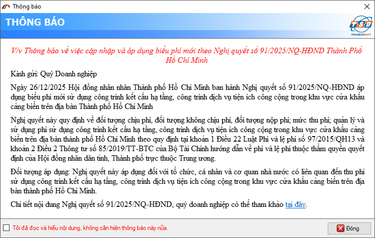
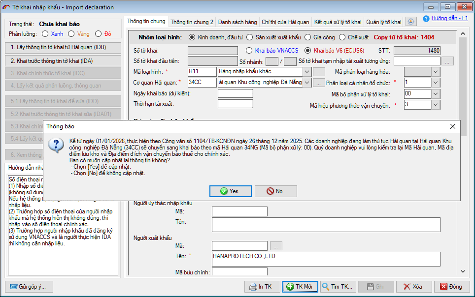
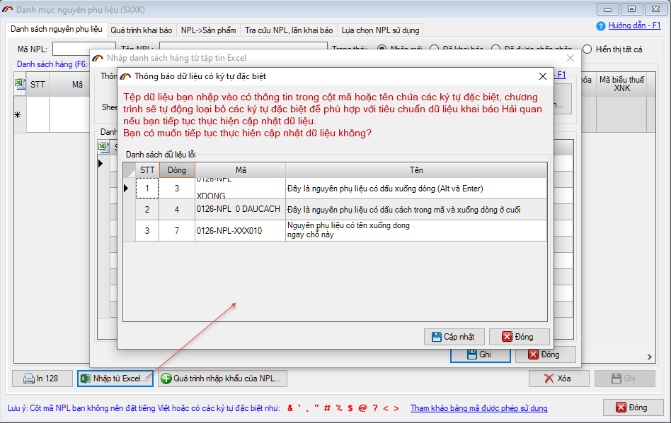
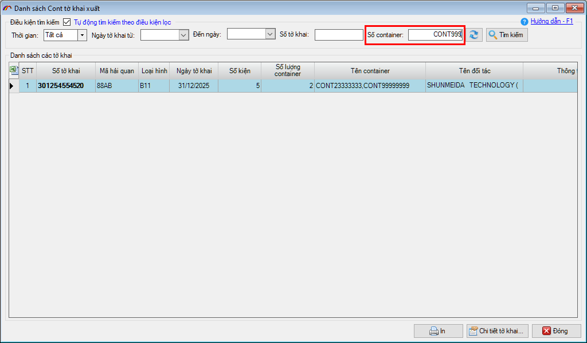
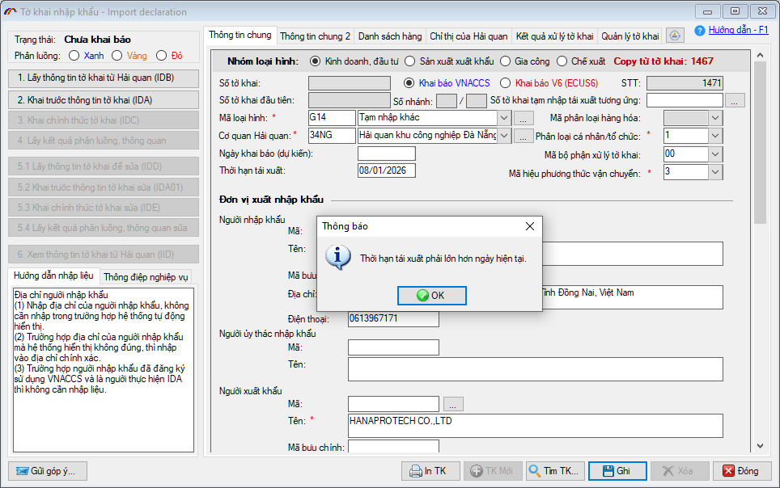

NHỮNG THAY ĐỔI TRÊN BẢN ECUS5VNACCS 2018
(Phiên bản update 05/01/2026)
Phần mềm ECUS5VNACCS2018 - Ngày phát hành 08/01/2026 | Version 6.0.200 | Lastupdate 05/01/2026 | Phiên bản CSDL 302
Phiên bản cập nhật ngày 05/01/2026 được phát hành ngày 08/01/2026 sửa đổi bổ sung một số chức năng, nhằm đáp ứng yêu cầu nghiệp vụ . Các chức năng được sửa đổi, bổ sung cụ thể như phần chi tiết dưới đây:
- 1. Bổ sung mã miễn giảm tiền phí cơ sở hạ tầng tại khu vực cảng biển trên địa bàn TP Hồ Chí Minh.
Thông báo về việc áp dụng mức thu phí mới theo quy định tại Nghị quyết số 91/2025/NQ-HĐND của Hội đồng nhân dân Thành phố Hồ Chí Minh, ban hành ngày 26/12/2025 có hiệu lực từ ngày 05 tháng 01 năm 2026.
Phần mềm thông báo tới cộng đồng quý doanh nghiệp và bổ sung thêm các mã áp dụng miễn giảm tiền phí theo quy định mới.

- 2. Thông báo cảnh báo chuyển mã Hải quan khi báo đối với mã Hải quan 34CC (chuyển về 34NG)
Kể từ ngày 01/01/2026, thực hiện theo Công văn số 1104/TB-KCNĐN ngày 26 tháng 12 năm 2025. Các doanh nghiệp đang làm thủ tục Hải quan tại Hải quan Khu công nghiệp Đà Nẵng (34CC) sẽ chuyển sang khai báo theo mã Hải quan 34NG (Mã bộ phận xử lý: 00)
Như vậy, từ ngày 01/01/2026 khi doanh nghiệp chọn mã Hải quan (34CC) hoặc Mã địa điểm lưu kho / Địa điểm đích vận chuyển bảo thuế là các mã: 34CCOZZ, 34CCCCC). Lúc ghi tờ khai, phần mềm sẽ hiển thị thông báo như dưới đây:

- 3. Bổ sung chức năng valid mã hàng, tên hàng có chứa ký tự đặc biệt khi Import từ excel
Nhằm giảm bớt rủi ro, sai sót khi khai báo danh mục Nguyên phụ liệu, Sản phẩm, Hàng mẫu, Thiết bị hàng Sản xuất xuất khẩu, Gia công thông qua việc Import dữ liệu từ file excel. Phần mềm bổ sung tính năng kiểm tra và tự động xử lý đối với các dòng dữ liệu có Mã hoặc Tên chứa ký tự đặc biệt, ký tự không hợp lệ (nếu khai lên sau này có thể gặp nhiều vướng mắc ở các bước khai báo định mức, BCQT..):

Chức năng này hiện đang áp dụng cho việc Import dữ liệu từ file excel của các mục:
- SXXK: Danh mục nguyên phụ liệu, Sản phẩm.
- Gia công: Danh mục Nguyên phụ liệu, Sản phẩm, Hàng mẫu, Thiết bị, Phụ kiện bổ sung Nguyên phụ liệu, Sản phẩm, Thiết bị.
- Chế xuất: Danh mục nguyên phụ liệu, Thiết bị, Hàng mẫu, Sản phẩm.
Khi gặp thông báo này, nếu bạn muốn phần mềm tự động xử lý các ký tự đặc biệt có trong Mã / Tên hàng thì nhấn nút Cập nhật, phần mềm sẽ xử lý cho toàn bộ các dòng.
Nếu bạn muốn tự kiểm tra lại file dữ liệu excel thì có thể dựa vào bảng thông báo để kiểm tra theo số dòng, mã và tên cụ thể trong danh sách. Sau khi kiểm tra xong danh sách, bạn nhấn nút Đóng và thực hiện lại việc Import dữ liệu.
- 4. Bổ sung chỉ tiêu tìm kiếm theo số Container cho báo cáo Thống kê danh sách cont tờ khai xuất.

- 5. Bổ sung cảnh báo khi người dùng nhập vào ngày Thời hạn tái xuất / tái nhập nhỏ hơn hoặc bằng ngày hiện tại..

- 6. Ngoài ra phần mềm còn sửa đổi, bổ sung một số tính năng khác nhằm nâng cao hiệu suất sử dụng.
Bản quyền © thuộc về Công ty TNHH Phát triển công nghệ Thái Sơn